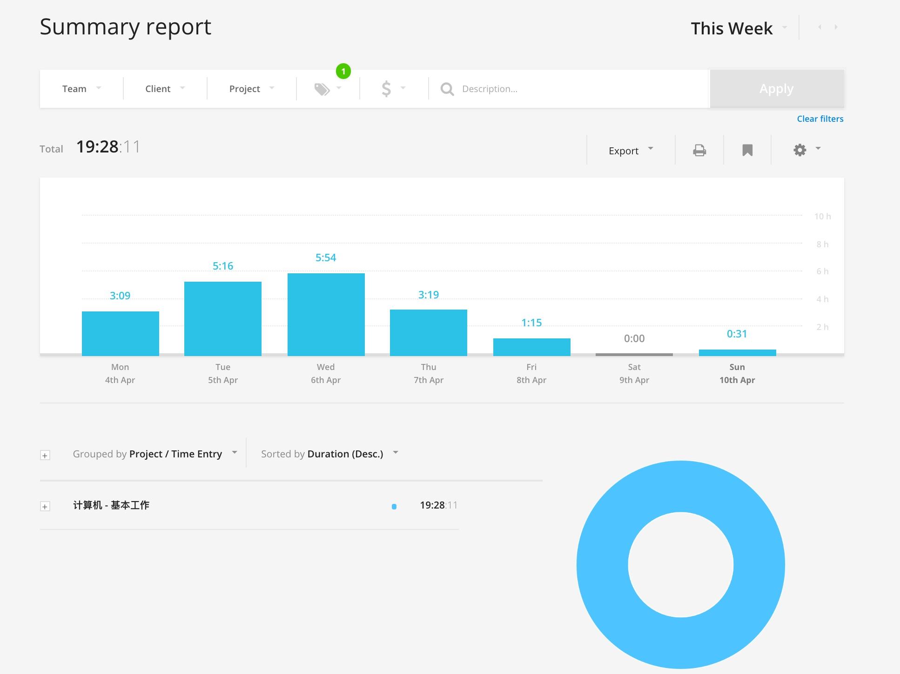

Swift 中的内存管理
这篇文章是在阅读《The Swift Programming Language》Automatic Reference Counting（ARC，自动引用计数）一章时做的一些笔记，同时参考了其他的一些资料。
在早期的 iOS 开发中，内存管理是由开发者手动来完成的。因为传统的垃圾回收机制对于移动平台来说十分低效，苹果采用的是引用计数（RC，Reference Counting）的方式来管理内存，开发者需要通过手工的方式增加或减少一个实例的引用计数。在 iOS 5 之后，引入了 ARC 自动引用计数，使得开发者不需要手动地调用 retain 和 release 来管理引用计数，但是实际上这些方法还是会被调用，只不过是交给了编译器来完成，编译器会在合适的地方帮我们加入这些方法。
什么是自动引用计数？
每当你创建一个类的实例的时候，ARC 便会自动分配一块内存空间来存放这个实例的信息，当这个实例不再被使用的时候，ARC 便释放实例所占用的内存。一般每个被管理的实例都会与一个引用计数器相连，这个计数器保存着当前实例被引用的次数，一旦创建一个新的引用指向这个实例，引用计数器便加 1，每当指向该实例的引用失效，引用计数器便减 1，当某个实例的引用计数器变成 0 的时候，这个实例就会被立即销毁。
在 Swift 中，对引用描述的关键字有三个：strong，weak 和 unowned，所有的引用没有特殊说明都是 strong 强引用类型。在 ARC 中，只有指向一个实例的所有 strong 强引用都断开了，这个实例才会被销毁。
举一个简单的例子：
class A {
let name: String
init(name: String) {
self.name = name
}
deinit {
print("A deinit")
}
}
var a1: A?
var a2: A?
a1 = A(name: "A")
a2 = a1
a1 = nil
上面这个例子中，虽然 a1 这个 strong 强引用断开了，但是还有 a2 这个强引用指向这个实例，所以不会在命令行中输出 A deinit，当我们把 a2 也设置为 nil 时，与这个实例关联的所有强引用均断开了，这个实例便会被销毁，在命令行中打印 A deinit。
循环强引用（Strong Reference Cycles）
但是，在某些情况下，一个类实例的强引用数永远不能变为 0，例如两个类实例互相持有对方的强引用，因而每个类实例都让对方一直存在，这就是所谓的强引用循环（Strong Reference Cycles）。
这里引用 TSPL 中的例子：
class Person {
let name: String
init(name: String) { self.name = name }
var apartment: Apartment?
deinit { print("\(name) is being deinitialized") }
}
class Apartment {
let unit: String
init(unit: String) { self.unit = unit }
var tenant: Person?
deinit { print("Apartment \(unit) is being deinitialized") }
}
每一个 Person 实例有一个可选的初始化为 nil 的 Apartment 类型，因为一个人并不总是拥有公寓。同样，每一个 Apartment 实例都有一个可选的初始化为 nil 的 Person 类型，因为一个公寓并不总是属于一个人。
接下来的代码片段定义了两个可选类型的变量 john 和 unit4A，并分别设定为下面的 Person 和 Apartment 的实例，这两个变量都备受设定为 nil：
var john: Person?
var unit4A: Apartment?
现在可以创建特定的 Person 和 Apartment 实例，并将它们赋值给 john 和 unit4A 变量：
john = Person(name: "John Appleseed")
unit4A = Apartment(unit: "4A")
下面一段代码将这两个实例关联起来：
john!.apartment = unit4A
unit4A!.tenant = john
将两个实例关联在一起后，强引用的关系如图所示：

这两个实例关联之后，会产生一个循环强引用，当断开 john 和 unit4A 所持有的强引用时，引用计数器并不会归零，所以这两块空间也得不到释放，这就导致了内存泄漏。
可以将其中一个类中的变量设定为 weak 弱引用来打破这种强引用循环：
class Apartment {
let unit: String
init(unit: String) { self.unit = unit }
weak var tenant: Person?
deinit { print("Apartment \(unit) is being deinitialized") }
}

当断开 john 和 unit4A 所持有的强引用时，Person instance 的引用计数器变成 0，实例被销毁，从而 Apartment instance 的引用计数器也变为 0，实例被销毁。
什么时候使用 weak？
当两个实例是 optional 关联在一起时，确保其中的一个使用 weak 弱引用，就像上面所说的那个例子一样。
unowned 无主引用
在某些情况下，声明的变量总是有值得时候，我们需要使用 unowned 无主引用。
同样借用一下 TSPL 中的例子：
class Customer {
let name: String
var card: CreditCard?
init(name: String) {
self.name = name
}
deinit { print("\(name) is being deinitialized") }
}
class CreditCard {
let number: UInt64
unowned let customer: Customer
init(number: UInt64, customer: Customer) {
self.number = number
self.customer = customer
}
deinit { print("Card #\(number) is being deinitialized") }
}
这里定义了两个类，Customer 和 CreditCard，模拟了银行客户和客户的信用卡，在这个例子中，每一个类都是将另一个类的实例作为自身的属性，所以会产生循环强引用。
和之前那个例子不同的是，CreditCard 类中有一个非可选类型的 customer 属性，因为，一个客户可能有或者没有一张信用卡，但是一张信用卡总是关联着一个用户。
var john: Customer?
john = Customer(name: "John Appleseed")
john!.card = CreditCard(number: 1234_5678_9012_3456, customer: john!)
关联两个实例后，它们的引用关系如图所示：

当断开 john 变量持有的强引用时，再也没有指向 Customer 的强引用了，所以该实例被销毁了，其后，再也没有指向 CreditCard 的强引用了，该实例也被销毁了。
什么时候使用 unowned 无主引用？
两个实例 A 和 B，如果实例 A 必须在实例 B 存在的前提下才能存在，那么实例 A 必须用 unowned 无主引用指向实例 B。也就是说，有强制依赖性的那个实例必须对另一个实例持有无主引用。
例如上面那个例子所说，银行客户可能没有信用卡，但是每张信用卡总是绑定着一个银行客户，所以信用卡这个类就需要用 unowned 无主引用。
无主引用以及隐市解析可选属性
还有一种情况，两个属性都必须有值，并且初始化完成之后永远不会为 nil。在这种情况下，需要一个类使用 unowned 无主引用，另一个类使用隐式解析可选属性。
闭包引起的循环强引用
在 Swift 中，闭包和函数都属于引用类型。并且闭包还有一个特性：可以在其定义的上下文中捕获常量或者变量。所以，在一个类中，闭包被赋值给了一个属性，而这个闭包又使用了这个类的实例的时候，就会引起循环强引用。
Swift 提供了一种方法来解决这个问题：闭包捕获列表（closure capture list）。在定义闭包的同时定义捕获列表作为闭包的一部分，捕获列表定义了闭包体内捕获一个或者多个引用类型的规则。跟解决两个类实例之间的循环强引用一样，声明每个捕获的引用为弱引用或者无主引用。
捕获列表中的每一项都由一对元素组成，一个元素是 weak 或者 unowned 关键字，另一个元素是类实例的引用（例如最常见得是 self），这些在方括号内用逗号隔开。
具体的使用方法请参考官方文档。
何时使用 weak，何时使用 unowned
在闭包和捕获的实例总是相互引用并且总是同时销毁的时候，将闭包内的捕获定义为 unowned 无主引用。
在被捕获的实例可能变成 nil 的情况下，使用 weak 弱引用。如果被捕获的引用绝对不会变成 nil，应该使用 unowned 无主引用，而不是 weak 弱引用。
Garbage Collection（GC，垃圾回收）
其实 ARC 应该也算 GC 的一种，不过我们一谈到 GC，大多都会想到 Java 中的垃圾回收机制，相比较 GC，ARC 简单得许多。以后有机会可以讨论一下 Java 中的内存管理。
另外，需要注意的一点是，这里所讲的都是针对于引用类型，结构体和枚举在 Swift 中属于值类型，不在 ARC 的考虑范围之内。
更有效率的程序员（一）：时间记录
两年前，曾经写过一篇有关时间管理的文章，那个时候还在上高二，对于时间管理仅仅是有一点肤浅的了解，自然写出来的文字也是比较幼稚的。经过两年的实践，积累了很多时间管理的经验，想要拿出来分享一下。预计会写一个系列，包括使用的工具和日常的 Workflow。
日常使用的工具有这些：
- 纸质笔记本（Moleskine）
- OmniFocus
- Evernote
- Toggl
这篇文章从题目也可以看出来，主要讲一些关于时间记录的内容，对应的工具是 Toggl。关于 Toggl，我已经在知乎的一个回答里面推荐过了，这里会更加详细地介绍一下使用流程，在谈论术之前，先来说说道的问题，为什么要做时间记录。
其实我们对时间是很不敏感的，相信你一定有过这样的体验：早晨醒来，干劲满满，准备打开电脑把昨天没有写完的代码解决，这时想到邮件还没看，先查一下邮件吧，反正花不了多少时间，在查看邮件的时候又发现知乎上有人给你发私信了，在到知乎上看一下私信，顺便回复一下，既然上了知乎，那么去首页看看订阅的内容里面有没有什么有意思的东西吧，看到一个有意思的回答，是推荐你买买买的，于是乎又打开淘宝看了看商品的具体情况，顺便加到购物车里，这是候发现已经中午了，算了，先去吃饭吧，代码等等吃完饭再写，吃过午饭后又觉得有一点困意，那就睡一会儿吧，一觉醒来，发现已经四点多了，不行了，赶紧写代码，等等，这个 bug 好像找不到问题所在啊，算了，去 Stack Overflow 上找找吧，在 Stack Overflow 上找到了答案，链接到一篇具体的解释文章，点进去看了看，发现太长了，还是先加到 Pocket 中，以后再看吧，这个人的博客似乎写得不错，浏览一下 Archive 页面看看还有没有其他的好文章，从头到尾浏览了一遍，心中不禁惊叹，写得真好！然后想到今天 Reddit 好像还没看，说不定又有什么好东西，于是又上 /r/programming 刷了一会儿，看到了几篇牛逼的文章，时间也不早了，该吃晚饭了，吃完晚饭自然又不想写代码，休息一会儿，逛一下 Bilibili 吧，看了几个视频之后突然想到今天的代码还没有写，于是又接着关掉网页去写代码，搞到深夜，终于把代码写完了，朋友圈发一条状态「奋战到深夜，终于把代码改完了！」。
多么充实的一天，你这样想到，今天似乎做了很多事情。但是实际上呢？有效的时间几乎只有两三个小时。所以你需要把做什么事用了多长时间记录下来，然后就会发现这「充实」的一天过得是多么可怕了。
根据这些时间的时间记录的经验来看，至少有以下三点好处：
- 提高对时间的感知能力，发现和避免时间黑洞。记录下时间的时候，你会刻意地关注目前手上正在做的事，如果是一些浪费时间的事，会使你减少花在上面的时间。
- 更好地制定计划。有段时间给自己制定的计划老是不能够完成，目标定得太高，再怎么跳也抓不到，通过记录一些事情所花费的时间，就可以更好地做计划，比如说看完一本书需要用多少时间。
- 激励自己。积累了一段时间的数据之后，就可以看到在某一方面投入了多少时间了，根据 10000 小时定律，可以知道自己与专家级别的能力还相差多少。
当然，凡事有利就必有弊。
- 时间记录本身也会花费时间（可以通过工具来弥补）。
- 最开始的时候总是会忘记记录。
- 事无巨细地记录时间，增加压力（这一点会在下面详细说明）。
简单地讲了一下「道」层面的问题，想要继续深入的可以看一下《奇特的一生》这本书。下面说一说「术」的层面。
简单的系统
其实最开始的时候一支笔、一本本子、一块手表就够了，这一阶段主要是养成时间记录的习惯，当然使用 Evernote 或者 OneNote 之类的软件也是可以的。可以按照以下的模板来记录：
2016/04/10
7:00 - 8:30 阅读 xxx xx 页（1h30min）
9:00 - 9:45 完成 xxx 项目 xx 功能的开发（45min）
...总结：
编程时间：xx h xx min
阅读时间：xx h xx min
有效时间合计：xx h xx min
娱乐时间：xx h xx min
...
具体的分类可以根据自己的需求来进行。如果对时间记录没有接触过的同学可以选择这个方法试着用一段时间，看有没有什么改变。
Toggl
前面说了这么多，中与引来了今天的主角：Toggl。什么是 Toggl，简单得来说，是一款时间记录的工具，试用过市面上几乎所有时间记录的工具，发现 Toggl 是最符合《奇特的一生》中的工作流的。
安装
Toggl 几乎包含了全部平台，其中最强大的属于 Web 版，各种高级的报表功能需要在 Web 版上面才能试使用。
并且它还提供了 API，可以自由定制。
基本使用
下面主要介绍 Web 版的内容。注册完登陆进计时页面就是如下图所示：

- 你当前正在记录的内容（如果不确定，可以先不填，这个是比其他软件优秀的原因之一，有时候只是想先记录下时间，之后再进行区分）；
- 当前记录内容所属分类，可以添加 Tag，后面的美元符号可以添加这个任务的花费，基本没有用到过这个功能；
- 记录的时间，可以手动添加时间；
- Timeline，每天做了什么事情用了多少时间就记录在这里（周六周日没有怎么使用，所以比较空）；
- 一周记录时间汇总。
知道了以上的内容之后就可以开始记录了，比如说就把学习 Toggl 的使用当成第一个记录的内容。
更好的分类
详细的分类可以更好地输出报表。我使用的是三级的分类：大类-具体领域分类-task。Toggl 默认只可以使用两个层级的分类，Project - Task，但是可以把 Client 这个用作最大的分类，这样就可以进行三个层级的分类，下面是我的分类内容；
- 基本工作（Client）
- 计算机（Project）
- 英语
- 健身
- 写作
- 阅读
- 工作（几乎用不到，因为还在学校里）
- 固定日程
- 上课
- 睡觉
- 杂事
- 娱乐
- 上网
- 游戏
- 视频/电影
分级不宜过多，否则会增加选择的压力，可以在使用的过程中不断改进。
最大的类别（Clients）可以在 Workspace Settings 中添加：

Project 的类别在 Projects 选项中添加，可以给每个 Project 不同的颜色以示区分。
Tag 很少使用，可以为一些相同类型的事情设定相关的 Tag 来作为补充。
强大的统计功能
使用纸笔做时间记录的麻烦之处就是统计的时候需要花费很多精力去计算，用 APP 就可以免除这些过程，直接根据记录的内容生成非常漂亮的报表，下面的是我这一周的统计内容，从柱状图可以看出这周的效率是逐渐递减的-_-|||

Reports 支持三种模式：Summary, Detailed, Weekly。上面的是 Summary 的 Reports，Detailed 会把你做的所有事情列出来，Weekly 会以周视图的方式来显示：

Reports 支持强大的过滤功能，可以根据需要选择 Reports 的时间长度、Project 内容、Tag 内容等等。比如说我想查看这周用在 iOS Dev 上的时间是多少，只需要选择 iOS Dev 这个 Tag 就可以了：

Dashboard
Toggl 还提供了仪表盘视图，在这里你可以看到最常 Track 的项目以及一些其他内容。

如果在本地 APP 里面打开了 Timeline Track，还可以在 Timeline For Today 这一栏里面查看使用了什么软件，用了多长时间。
Workflow
每天从 Todo 里面拿出一件事情，打开计时器，开始做，本着「做一件事情就把它做好的原则」去完成。积累了一段时间的数据之后，就可以更好地计划自己了，比如说本周阅读多少专业书籍，写多少代码。具体的 Workflow 需要结合 OmniFocus 和笔记本来完成，所以会在下一篇文章中来说明。
FAQ
什么事情都需要记录吗？
只需要记录重要的事情。日常生活中的吃喝拉撒记录了没有任何用处，有一段时间我一直在记录自己的睡眠时间，不过后来固定了之后就不记录了。
忘了记录怎么办？
这个只能慢慢地养成记录的习惯，如果记得大概的时间的话，可以手动录入时间。
手边没有电脑怎么办？
一般我都是用手机进行记录，如果连手机也不在手边的话，可以先拿张纸记着，之后再手动录入上去。
后记
其实，等你做了一段时间的时间日志会发现，会发现效率并没有提高多少，有时候不得不承认这个悲伤的事实，根据自己的时间日志，最高效的一天记录了 7 个小时的学习时间，相比较那些动不动就每天学习 8 小时的人来说，还是差太多了，不过好歹也算是做出了一点点努力。
写这篇文章的契机是看到了 pluskid 写的《关于知识整理、积累与记忆》，想到自己也有挺多经验可以分享的，于是便以试试的心态动笔开始写。
仓促成文，错误在所难免，还望指正。
Copyright © 2015 Powered by MWeb, Theme used GitHub CSS.